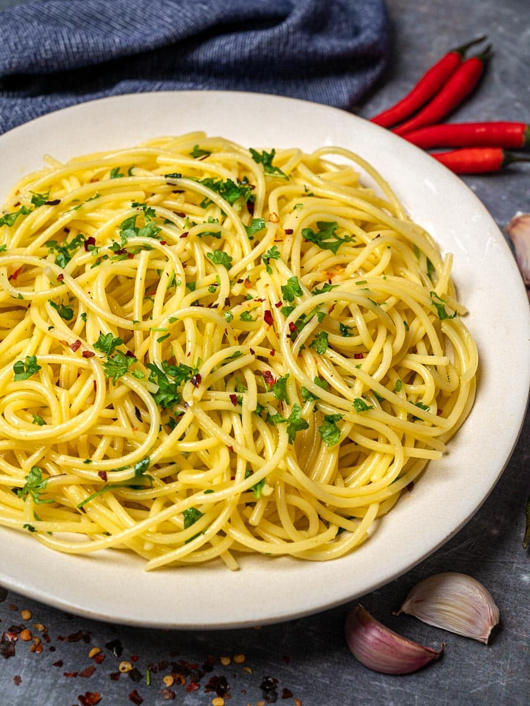

Spaghetti aglio e olio peperoni
Main Page

Picture found on skinnyspatula.com
Description
An easy and fast recipe for Spaghetti aglio e olio peperoni.
Perfect for using spaghetti leftovers to make a delicious meal.
Ingridients for 1 dish
- 4 spoons of olive oil
- 1 piece of garlic, hacked in small pieces
- Several peperoni to taste, sliced
- Spaghetti (freshly cooked or leftover)
- Salt
Steps
- Hack the garlic into small pieces.
(Take care not to use too much.)
Cut the peperoni in slices.
- Put the garlic and peperoni into a frying pan.
Add the olive oil and some salt. Heat
everything up with medium-high heat.
- Once the oil is hot, add the spaghetti.
Heat them up, all the while taking care to stir,
so that they don't burn and the garlic
and peperoni mix well with the pasta.
If you like, add salt to taste.
- Once everything is mixed and heated up,
the meal is ready to be served. Enjoy!
Main Page